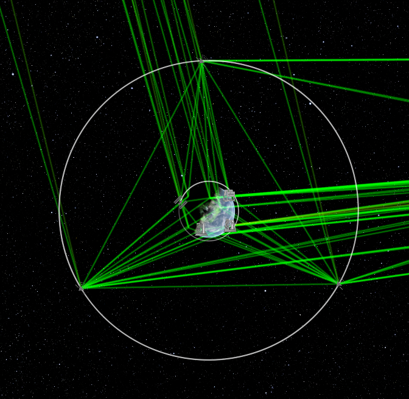

Purpose of the Calculator
Originally the main purpose of the resonant orbit calculator was to provide an easy method to set up a communications relay network of arbitrary size such that the individual satellites would be evenly dispersed in their final orbits. In addition the calulator would provide the neceessary energy changes required to set up such a network. Ultimately the calculator proved be a success especially when using it in tandem with the game Kerbal Space Program. In addition, this calculator could also be used to setup simple communications systems around the earth. However, the calulator is limited by its simplicity
